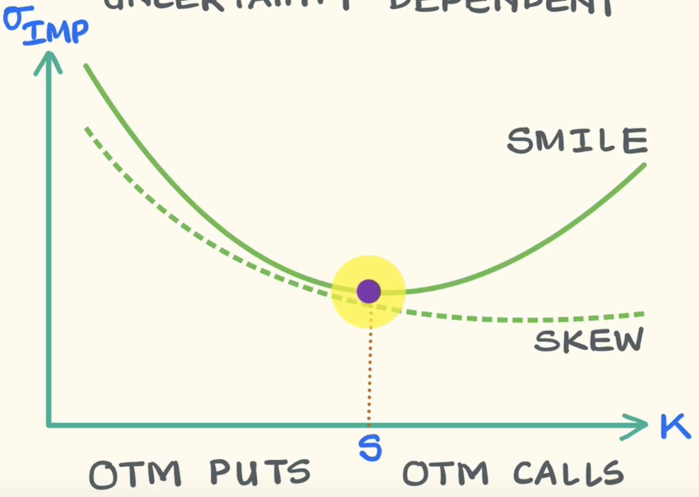
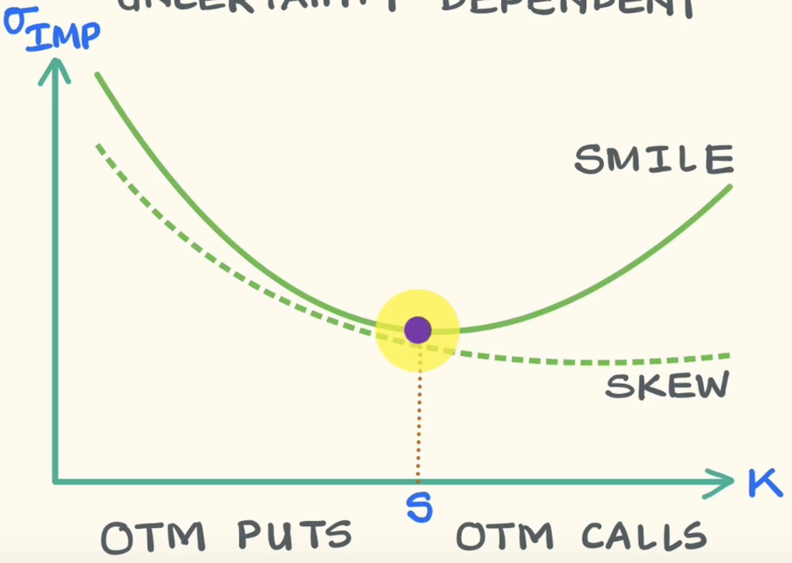

Decision Tree Regressor Algorithm Steps
• Original MSE from all Y values
• For each feature
• For each possible split (based on X values)
• Split Y values into two groups
• Calculate mean and MSE for each group
• Combine MSEs with weighted average
• Information Gain = Original MSE - Weighted MSE
• Track split with highest gain for this feature
• Select best split across all features
Complete Analysis Output:
================================================================================ ROOT NODE SPLIT ANALYSIS - ALL POSSIBLE SPLITS ================================================================================ Original MSE (all data together): 57428.1638 Total samples: 540 Target mean: 4.8583 📊 FEATURE: ep1 -------------------------------------------------- Unique values: 540 values Number of possible splits: 539 🆠Best split for ep1: ≤ 0.016 (gain: 967.379277) 📊 FEATURE: ep2 -------------------------------------------------- Unique values: 540 values Number of possible splits: 539 🆠Best split for ep2: ≤ 0.023 (gain: 614.880218) 📊 FEATURE: vsp1 -------------------------------------------------- Unique values: 540 values Number of possible splits: 539 🆠Best split for vsp1: ≤ 0.032 (gain: 967.379277) 📊 FEATURE: vsp2 -------------------------------------------------- Unique values: 540 values Number of possible splits: 539 🆠Best split for vsp2: ≤ 0.047 (gain: 614.880218) 📊 FEATURE: ps1 -------------------------------------------------- Unique values: 540 values Number of possible splits: 539 🆠Best split for ps1: ≤ 2.622 (gain: 1078.762002) 📊 FEATURE: ps2 -------------------------------------------------- Unique values: 540 values Number of possible splits: 539 🆠Best split for ps2: ≤ -1.214 (gain: 685.158411) 📊 FEATURE: ps3 -------------------------------------------------- Unique values: 540 values Number of possible splits: 539 🆠Best split for ps3: ≤ 0.893 (gain: 297.206770) 📊 FEATURE: ps4 -------------------------------------------------- Unique values: 540 values Number of possible splits: 539 🆠Best split for ps4: ≤ 0.608 (gain: 667.142681) 📊 FEATURE: gam_t -------------------------------------------------- Unique values: 540 values Number of possible splits: 539 🆠Best split for gam_t: ≤ 0.003 (gain: 701.800267) 📊 FEATURE: vega_t -------------------------------------------------- Unique values: 540 values Number of possible splits: 539 🆠Best split for vega_t: ≤ 1.052 (gain: 550.542228) 📊 FEATURE: ts1 -------------------------------------------------- Unique values: 540 values Number of possible splits: 539 🆠Best split for ts1: ≤ 0.525 (gain: 314.668971) 📊 FEATURE: ts2 -------------------------------------------------- Unique values: 540 values Number of possible splits: 539 🆠Best split for ts2: ≤ 0.512 (gain: 555.451128) 📊 FEATURE: strike_bias -------------------------------------------------- Unique values: 540 values Number of possible splits: 539 🆠Best split for strike_bias: ≤ -0.004 (gain: 886.752889) 📊 FEATURE: atm_pc_ratio -------------------------------------------------- Unique values: 540 values Number of possible splits: 539 🆠Best split for atm_pc_ratio: ≤ 0.951 (gain: 162.693451) 📊 FEATURE: otm_pc_ratio -------------------------------------------------- Unique values: 540 values Number of possible splits: 539 🆠Best split for otm_pc_ratio: ≤ 1.440 (gain: 998.071416) 📊 FEATURE: gamma_conc -------------------------------------------------- Unique values: 540 values Number of possible splits: 539 🆠Best split for gamma_conc: ≤ 0.278 (gain: 611.190562) 📊 FEATURE: net_delta -------------------------------------------------- Unique values: 540 values Number of possible splits: 539 🆠Best split for net_delta: ≤ 43352136.673 (gain: 771.967713) 📊 FEATURE: vanna_exp -------------------------------------------------- Unique values: 540 values Number of possible splits: 539 🆠Best split for vanna_exp: ≤ 68992.281 (gain: 565.248857) 📊 FEATURE: vw_spread -------------------------------------------------- Unique values: 540 values Number of possible splits: 539 🆠Best split for vw_spread: ≤ 0.594 (gain: 976.291212) 📊 FEATURE: vol_oi_ratio -------------------------------------------------- Unique values: 540 values Number of possible splits: 539 🆠Best split for vol_oi_ratio: ≤ 0.298 (gain: 651.133546) 📊 FEATURE: vol_slope_dte -------------------------------------------------- Unique values: 540 values Number of possible splits: 539 🆠Best split for vol_slope_dte: ≤ -0.000 (gain: 760.706785) 📊 FEATURE: vol_term_spread -------------------------------------------------- Unique values: 540 values Number of possible splits: 539 🆠Best split for vol_term_spread: ≤ 0.032 (gain: 881.926379) 📊 FEATURE: b1w50dC_011iv -------------------------------------------------- Unique values: 536 values Number of possible splits: 535 🆠Best split for b1w50dC_011iv: ≤ 0.331 (gain: 1350.318444) 📊 FEATURE: b1w50dC_011spread -------------------------------------------------- Unique values: 439 values Number of possible splits: 438 🆠Best split for b1w50dC_011spread: ≤ 0.053 (gain: 1170.817673) 📊 FEATURE: b1w50dC_011gamma -------------------------------------------------- Unique values: 528 values Number of possible splits: 527 🆠Best split for b1w50dC_011gamma: ≤ 0.030 (gain: 910.460197) 📊 FEATURE: b1w50dC_011vega -------------------------------------------------- Unique values: 530 values Number of possible splits: 529 🆠Best split for b1w50dC_011vega: ≤ 0.145 (gain: 541.617119) 📊 FEATURE: b1w50dC_011theta -------------------------------------------------- Unique values: 539 values Number of possible splits: 538 🆠Best split for b1w50dC_011theta: ≤ -0.702 (gain: 525.221872) 📊 FEATURE: b1w50dC_011mid -------------------------------------------------- Unique values: 407 values Number of possible splits: 406 🆠Best split for b1w50dC_011mid: ≤ 5.225 (gain: 575.797658) 📊 FEATURE: b1w50dP_011iv -------------------------------------------------- Unique values: 531 values Number of possible splits: 530 🆠Best split for b1w50dP_011iv: ≤ 0.329 (gain: 1350.318444) 📊 FEATURE: b1w50dP_011spread -------------------------------------------------- Unique values: 431 values Number of possible splits: 430 🆠Best split for b1w50dP_011spread: ≤ 0.010 (gain: 1123.635552) 📊 FEATURE: b1w50dP_011gamma -------------------------------------------------- Unique values: 532 values Number of possible splits: 531 🆠Best split for b1w50dP_011gamma: ≤ 0.031 (gain: 894.772135) 📊 FEATURE: b1w50dP_011vega -------------------------------------------------- Unique values: 519 values Number of possible splits: 518 🆠Best split for b1w50dP_011vega: ≤ 0.145 (gain: 541.617119) 📊 FEATURE: b1w50dP_011theta -------------------------------------------------- Unique values: 534 values Number of possible splits: 533 🆠Best split for b1w50dP_011theta: ≤ -0.666 (gain: 554.699985) 📊 FEATURE: b1w50dP_011mid -------------------------------------------------- Unique values: 400 values Number of possible splits: 399 🆠Best split for b1w50dP_011mid: ≤ 5.335 (gain: 894.772135) 📊 FEATURE: vix -------------------------------------------------- Unique values: 466 values Number of possible splits: 465 🆠Best split for vix: ≤ 28.995 (gain: 556.468126) 📊 FEATURE: vix30 -------------------------------------------------- Unique values: 535 values Number of possible splits: 534 🆠Best split for vix30: ≤ 31.197 (gain: 743.194942) 📊 FEATURE: vix9d -------------------------------------------------- Unique values: 476 values Number of possible splits: 475 🆠Best split for vix9d: ≤ 32.405 (gain: 843.660651) 📊 FEATURE: vvix -------------------------------------------------- Unique values: 513 values Number of possible splits: 512 🆠Best split for vvix: ≤ 121.160 (gain: 942.352982) 📊 FEATURE: rv -------------------------------------------------- Unique values: 540 values Number of possible splits: 539 🆠Best split for rv: ≤ 22.360 (gain: 2663.428490) 📊 FEATURE: vrp -------------------------------------------------- Unique values: 540 values Number of possible splits: 539 🆠Best split for vrp: ≤ 6.958 (gain: 2829.828337) 📊 FEATURE: DGS3MO -------------------------------------------------- Unique values: 220 values Number of possible splits: 219 🆠Best split for DGS3MO: ≤ 0.265 (gain: 442.956022) 📊 FEATURE: DGS6MO -------------------------------------------------- Unique values: 232 values Number of possible splits: 231 🆠Best split for DGS6MO: ≤ 2.440 (gain: 421.149045) 📊 FEATURE: DGS1 -------------------------------------------------- Unique values: 263 values Number of possible splits: 262 🆠Best split for DGS1: ≤ 1.165 (gain: 454.623375) 📊 FEATURE: DGS2 -------------------------------------------------- Unique values: 282 values Number of possible splits: 281 🆠Best split for DGS2: ≤ 0.205 (gain: 789.447937) 📊 FEATURE: DGS3 -------------------------------------------------- Unique values: 284 values Number of possible splits: 283 🆠Best split for DGS3: ≤ 0.265 (gain: 783.355375) 📊 FEATURE: DGS5 -------------------------------------------------- Unique values: 267 values Number of possible splits: 266 🆠Best split for DGS5: ≤ 0.405 (gain: 788.594500) 📊 FEATURE: DGS7 -------------------------------------------------- Unique values: 278 values Number of possible splits: 277 🆠Best split for DGS7: ≤ 0.545 (gain: 956.924826) 📊 FEATURE: DGS10 -------------------------------------------------- Unique values: 264 values Number of possible splits: 263 🆠Best split for DGS10: ≤ 4.140 (gain: 897.354267) 📊 FEATURE: DGS20 -------------------------------------------------- Unique values: 255 values Number of possible splits: 254 🆠Best split for DGS20: ≤ 4.540 (gain: 1042.884840) 📊 FEATURE: DGS30 -------------------------------------------------- Unique values: 256 values Number of possible splits: 255 🆠Best split for DGS30: ≤ 4.280 (gain: 978.475416) 📊 FEATURE: DTB3 -------------------------------------------------- Unique values: 212 values Number of possible splits: 211 🆠Best split for DTB3: ≤ 0.275 (gain: 460.790267) 📊 FEATURE: DTB6 -------------------------------------------------- Unique values: 225 values Number of possible splits: 224 🆠Best split for DTB6: ≤ 0.735 (gain: 434.096152) 📊 FEATURE: DTB1YR -------------------------------------------------- Unique values: 252 values Number of possible splits: 251 🆠Best split for DTB1YR: ≤ 1.140 (gain: 454.623375) 📊 FEATURE: T10Y2Y -------------------------------------------------- Unique values: 239 values Number of possible splits: 238 🆠Best split for T10Y2Y: ≤ 0.315 (gain: 975.650487) 📊 FEATURE: T10Y3M -------------------------------------------------- Unique values: 284 values Number of possible splits: 283 🆠Best split for T10Y3M: ≤ 0.300 (gain: 597.856004) 📊 FEATURE: T5YIE -------------------------------------------------- Unique values: 197 values Number of possible splits: 196 🆠Best split for T5YIE: ≤ 2.645 (gain: 1447.972767) 📊 FEATURE: T10YIE -------------------------------------------------- Unique values: 152 values Number of possible splits: 151 🆠Best split for T10YIE: ≤ 2.525 (gain: 2304.445533) 📊 FEATURE: BAMLH0A0HYM2 -------------------------------------------------- Unique values: 260 values Number of possible splits: 259 🆠Best split for BAMLH0A0HYM2: ≤ 3.135 (gain: 217.457871) 📊 FEATURE: BAMLC0A0CM -------------------------------------------------- Unique values: 112 values Number of possible splits: 111 🆠Best split for BAMLC0A0CM: ≤ 0.925 (gain: 374.470834) 📊 FEATURE: ema -------------------------------------------------- Unique values: 540 values Number of possible splits: 539 🆠Best split for ema: ≤ 371.373 (gain: 567.243190) 📊 FEATURE: macd -------------------------------------------------- Unique values: 540 values Number of possible splits: 539 🆠Best split for macd: ≤ 1.247 (gain: 707.597869) 📊 FEATURE: macds -------------------------------------------------- Unique values: 540 values Number of possible splits: 539 🆠Best split for macds: ≤ -4.030 (gain: 504.354938) 📊 FEATURE: rsi -------------------------------------------------- Unique values: 540 values Number of possible splits: 539 🆠Best split for rsi: ≤ 54.522 (gain: 621.418507) 📊 FEATURE: roc -------------------------------------------------- Unique values: 540 values Number of possible splits: 539 🆠Best split for roc: ≤ -6.582 (gain: 351.642280) 📊 FEATURE: trix -------------------------------------------------- Unique values: 540 values Number of possible splits: 539 🆠Best split for trix: ≤ -0.130 (gain: 1040.037505) 📊 FEATURE: rmi -------------------------------------------------- Unique values: 540 values Number of possible splits: 539 🆠Best split for rmi: ≤ 36.734 (gain: 292.261743) 📊 FEATURE: bolh -------------------------------------------------- Unique values: 540 values Number of possible splits: 539 🆠Best split for bolh: ≤ 425.480 (gain: 649.983762) 📊 FEATURE: boll -------------------------------------------------- Unique values: 540 values Number of possible splits: 539 🆠Best split for boll: ≤ 282.721 (gain: 445.895610) 📊 FEATURE: bolm -------------------------------------------------- Unique values: 540 values Number of possible splits: 539 🆠Best split for bolm: ≤ 405.037 (gain: 606.969441) 📊 FEATURE: dpo -------------------------------------------------- Unique values: 540 values Number of possible splits: 539 🆠Best split for dpo: ≤ 4.932 (gain: 1136.478588) ================================================================================ 🆠OVERALL BEST SPLIT (ROOT NODE) ================================================================================ Feature: vrp Threshold: 6.958123 Information Gain: 2829.828337 Left group: 422 samples, mean= 32.99 Right group: 118 samples, mean= -95.74 📈 TOP 10 SPLITS RANKED BY INFORMATION GAIN: ---------------------------------------------------------------------- 1. vrp ≤ 6.958 | Gain: 2829.828337 2. vrp ≤ 6.944 | Gain: 2814.036628 3. vrp ≤ 7.017 | Gain: 2747.100057 4. vrp ≤ 6.973 | Gain: 2720.484490 5. vrp ≤ 7.055 | Gain: 2699.062153 6. vrp ≤ 6.911 | Gain: 2671.138968 7. vrp ≤ 6.896 | Gain: 2671.013706 8. vrp ≤ 7.419 | Gain: 2665.149324 9. rv ≤ 22.360 | Gain: 2663.428490 10. vrp ≤ 6.880 | Gain: 2651.413799 ================================================================================

Random Forest Regressor Algorithm Steps
• Create N bootstrap samples (with replacement)
• For each bootstrap sample (in parallel)
• Original MSE from Y values in this sample
• For each node split
• Randomly select subset of features (√n_features)
• For each selected feature
• For each possible split (based on X values)
• Split Y values into two groups
• Calculate mean and MSE for each group
• Combine MSEs with weighted average
• Information Gain = Original MSE - Weighted MSE
• Track split with highest gain for selected features
• Select best split and continue building tree
• Average predictions from all N trees
XGBoost Regressor Algorithm Steps
• Initialize predictions (mean of Y values)
• For each tree (sequentially)
• Calculate residuals = Y - current_predictions
• Original MSE from residuals (not original Y)
• For each feature
• For each possible split (based on X values)
• Split residuals into two groups
• Calculate mean and MSE for each group
• Combine MSEs with weighted average
• Information Gain = Residual MSE - Weighted MSE
• Track split with highest gain for this feature
• Select best split across all features
• Update predictions += learning_rate × tree_prediction
• Final prediction = sum of all tree contributions
Decision Tree Classifier Algorithm Steps
• Original Gini Impurity from all Y values
• For each feature
• For each possible split (based on X values)
• Split Y values into two groups
• Calculate class counts and Gini for each group
• Combine Gini scores with weighted average
• Information Gain = Original Gini - Weighted Gini
• Track split with highest gain for this feature
• Select best split across all features
Random Forest Classifier Algorithm Steps
• Create N bootstrap samples (with replacement)
• For each bootstrap sample (in parallel)
• Original Gini Impurity from Y values in this sample
• For each node split
• Randomly select subset of features (√n_features)
• For each selected feature
• For each possible split (based on X values)
• Split Y values into two groups
• Calculate class counts and Gini for each group
• Combine Gini scores with weighted average
• Information Gain = Original Gini - Weighted Gini
• Track split with highest gain for selected features
• Select best split and continue building tree
• Majority vote from all N trees
XGBoost Classifier Algorithm Steps
• Initialize predictions (class probabilities)
• For each tree (sequentially)
• Calculate probability residuals (gradients)
• Original impurity from residuals (not original Y)
• For each feature
• For each possible split (based on X values)
• Split residuals into two groups
• Calculate gain metric for each group
• Combine scores with weighted average
• Information Gain = Residual impurity - Weighted impurity
• Track split with highest gain for this feature
• Select best split across all features
• Update probabilities += learning_rate × tree_prediction
• Final prediction = class with highest probability
Static Portfolio Theory for Variance and Gamma Swaps
Contents
The Theory Behind Static Replication
The theory relies on replicating the payoffs using option pricing mathematics. Here are the key formulas:
Variance Swap Theory
The realized variance of a stock can be replicated by a portfolio weighted by 1/K²:
Variance ≈ ∫ (1/K²) × Option(K) dK
Where:
- K = strike price
- You buy both calls (K > S₀) and puts (K < S₀)
- Weight each option by 1/strike²
- S₀ = current stock price
Why 1/K²? This comes from the mathematical relationship between option prices and realized variance in the Black-Scholes framework.
Gamma Swap Theory
Gamma can be replicated with a different weighting - typically 1/K:
Gamma exposure ≈ ∫ (1/K) × Option(K) dK
The Mathematical Intuition:
- Options naturally capture convexity (gamma/variance effects)
- By weighting options across all strikes with these specific formulas, the portfolio's payout automatically matches what variance/gamma swaps should pay
- It's like the options "naturally aggregate" into the desired exposure
The Problem in Practice:
You need options at every possible strike, but:
- Exchanges only list strikes in increments (5, 10, 25 point intervals)
- Far out-of-the-money options are illiquid
- Very low/high strikes might not exist at all
So the "static" theory assumes infinite liquidity across all strikes, which doesn't exist in reality.
How Theory Translates to Actual Trades
Variance Swap - Long Position (receiving realized variance)
What you buy:
- Puts at all strikes below current stock price (K < S₀)
- Calls at all strikes above current stock price (K > S₀)
- Each weighted by 1/K²
Example: Stock at $100
- Buy put at $95 strike: quantity = 1/95² = 0.000111
- Buy put at $90 strike: quantity = 1/90² = 0.000123
- Buy call at $105 strike: quantity = 1/105² = 0.000091
- Buy call at $110 strike: quantity = 1/110² = 0.000083
- etc.
Gamma Swap - Long Position
What you buy:
- Same structure (puts below, calls above current price)
- But weighted by 1/K instead of 1/K²
Example: Stock at $100
- Buy put at $95: quantity = 1/95 = 0.0105
- Buy put at $90: quantity = 1/90 = 0.0111
- Buy call at $105: quantity = 1/105 = 0.0095
- etc.
Key Points:
- You're always buying options (long gamma/convexity)
- The weighting makes far OTM options have smaller positions
- Lower strikes get higher weightings due to the 1/K or 1/K² factor
- You need both puts and calls to capture moves in both directions
In Practice: Dealers approximate this by buying options at available strikes and interpolating.
Quick Comparison
| Aspect | Variance Swap | Gamma Swap |
|---|---|---|
| Weighting Formula | 1/K² | 1/K |
| Tail Exposure | Lower (due to 1/K² weighting) | Higher (due to 1/K weighting) |
| Example Quantity at $95 Strike | 0.000111 | 0.0105 |
| Hedging Approach | Static replication possible | Static replication possible |
| Market Liquidity | Was popular, collapsed in 2008 | Never gained meaningful traction |
Black-Scholes Derivation
The Step-by-Step Thought Process (No BS Edition)
The Core Question:
"We have an option price $C(t, S_t)$ - how the hell does it change over time?"
1
Set Up the Option Price Function
The Starting Point: We know the option price depends on two things:
- Time $t$ (options expire, so time matters)
- Stock price $S_t$ (higher stock price usually means higher call option value)
$$ C = C(t, S_t) $$
What we want: Find $dC$ (how does the option price change?)
The Problem:
Regular calculus won't work here because $S_t$ is random. We need help!
↓
2
Model the Stock Price (Geometric Brownian Motion)
The Assumption: Stock prices follow geometric Brownian motion
$$ dS_t = \mu S_t dt + \sigma S_t dW_t $$
But wait! We apply the risk-neutral assumption:
- Pretend investors don't care about risk
- Replace drift $\mu$ with risk-free rate $r$
- Makes the math way easier!
$$ dS_t = r S_t dt + \sigma S_t dW_t^* $$
Historical Note:
This assumption came about because someone realized "Hey, if we assume this, the math becomes solvable!"
↓
3
Itô Comes to the Rescue
The Problem: How do you differentiate $C(t, S_t)$ when $S_t$ is random?
Kiyosi Itô (1940s):
"I figured out how to do calculus with random processes! You need an extra term because $(dW_t)^2 = dt$, not zero!"
Itô's Lemma gives us:
$$ dC = \frac{\partial C}{\partial t}dt + \frac{\partial C}{\partial S}dS_t + \frac{1}{2}\frac{\partial^2 C}{\partial S^2}(dS_t)^2 $$
Substitute our stock dynamics:
- $dS_t = r S_t dt + \sigma S_t dW_t^*$
- $(dS_t)^2 = \sigma^2 S_t^2 dt$ (magic of stochastic calculus!)
$$ dC = \left(\frac{\partial C}{\partial t} + r S_t \frac{\partial C}{\partial S} + \frac{1}{2}\sigma^2 S_t^2 \frac{\partial^2 C}{\partial S^2}\right)dt + \sigma S_t \frac{\partial C}{\partial S}dW_t^* $$
↓
4
Apply Martingale Property (Knock Off the Drift!)
Key Insight: Under risk-neutral measure, discounted option prices must be martingales
What this means: The drift term must equal zero!
The Logic:
If discounted prices had non-zero drift, there would be arbitrage opportunities. No free lunch allowed!
Set the drift to zero:
$$ \frac{\partial C}{\partial t} + r S_t \frac{\partial C}{\partial S} + \frac{1}{2}\sigma^2 S_t^2 \frac{\partial^2 C}{\partial S^2} - r C = 0 $$
Rearrange:
🉠THE BLACK-SCHOLES PDE! ğŸ‰
$$ \frac{\partial C}{\partial t} + r S \frac{\partial C}{\partial S} + \frac{1}{2}\sigma^2 S^2 \frac{\partial^2 C}{\partial S^2} = r C $$
🧠The Beautiful Logic Chain
Option price function: $C(t, S_t)$
↓
Need $dC$ (Itô helps with random calculus)
↓
Stock follows GBM (with risk-neutral drift $r$)
↓
Substitute into Itô's formula
↓
Apply martingale condition (knock off drift term)
↓
🆠BLACK-SCHOLES PDE! ğŸ†
The Key Insight:
Each mathematician contributed their piece to the puzzle:
- Bachelier (1900): "Stock prices are random walks"
- Itô (1940s): "Here's how to do calculus with random processes"
- Samuelson (1960s): "Geometric Brownian motion for stock prices"
- Black, Scholes, Merton (1970s): "Let's put it all together with risk-neutral pricing!"
🯠Mission Accomplished!
From a simple question about option price changes, through geometric Brownian motion, Itô's calculus, and martingale theory, we derived one of the most important equations in mathematical finance!
And all because someone realized that assuming "investors don't care about risk" makes the math work out beautifully.